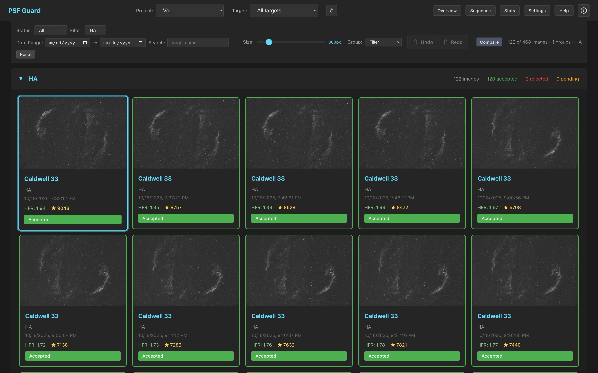
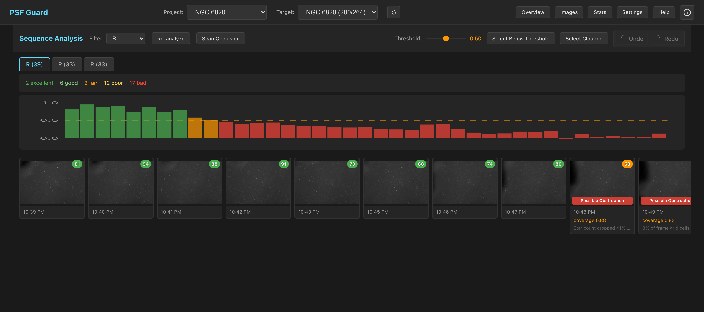

The Web Grader
A fast, keyboard-driven UI for reviewing and grading subs — served by
psf-guard server or built into the desktop app. Grades are
written straight to the Target Scheduler database, so acquired-image counts
stay accurate and rejected frames get re-shot.
Overview dashboard

The overview aggregates all your configured scheduler databases: project and target statistics, completion percentages, real-time file discovery status, and filter usage. Click through any project or target to land in its grid.
Image grid

- Smart filtering — project, target, grading status, date range.
- Batch operations — multi-select with Shift+Click / Ctrl+Click, then accept, reject, or unmark the whole selection.
- Metadata on every card — HFR, star counts, acquisition details.
- Smart loading — fast previews first, full resolution on zoom. Previews generate on demand in the background, so a fresh install is browsable immediately; a "Generating…" badge shows while the queue works.
Comparison mode

Put two frames side by side with synchronized (or independent) zoom and pan — ideal for judging a borderline frame against a known-good neighbor. Accept, reject, or unmark both images at once.
Sequence view

The Sequence view plots per-frame quality over a night: HFR, star counts, and — once you press Scan Occlusion — the spatial and photometric screening signals. Flagged runs are classified (occlusion, clouds, sky brightening) and can be bulk-selected for rejection. See Quality Screening for how the signals work.
Keyboard shortcuts
| Key | Action | Key | Action |
|---|---|---|---|
| K / → | Next image | A | Accept |
| J / ← | Previous image | X | Reject |
| C | Compare | U | Unmark |
| S | Stars overlay | + / − | Zoom |
| Ctrl+Z | Undo | Ctrl+Y | Redo |
Where grades go
Every action updates gradingStatus in the Target Scheduler
database (with undo/redo tracked in the UI). Because the scheduler counts
accepted images against each exposure plan, rejecting bad frames means the
scheduler queues replacements on the next imaging run — closing the loop
between grading and acquisition.